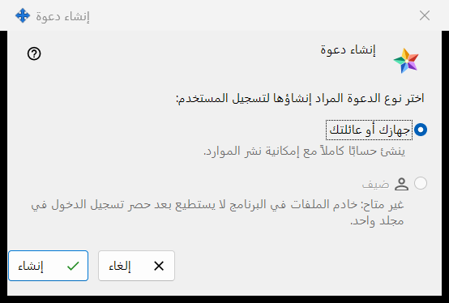
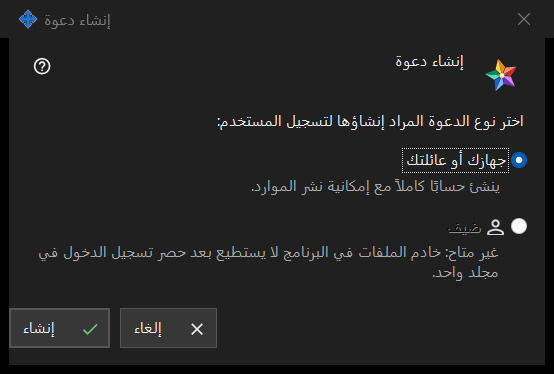

إنشاء دعوة
الغرض من هذه النافذة
تسأل هذه النافذة الصغيرة عن نوع الحساب الذي ستنشئه الدعوة الجديدة. افتحها بالزر إنشاء دعوة.. الموجود في مجموعة الدعوات ضمن إعدادات خادم التبادل؛ وتظهر المجموعة بمجرد وصول المدير إلى الخادم.


بهذا الترتيب
- اضغط الزر إنشاء دعوة.. في مجموعة الدعوات ضمن إعدادات خادم التبادل.
- أبقِ الخيار جهازك أو عائلتك محدّدًا.
- اضغط إنشاء.
- تُفتح النافذة تم إنشاء الدعوة وتعرض الرمز مرة واحدة: انسخه هناك. اضغط إلغاء أو Esc للخروج دون إنشاء أي شيء.
عناصر النافذة
نوع الدعوة
تحت السؤال اختر نوع الدعوة المراد إنشاؤها لتسجيل المستخدم: زرّا اختيار. الخيار جهازك أو عائلتك محدّد افتراضيًا، ويظهر تحته السطر: ينشئ حسابًا كاملاً مع إمكانية نشر الموارد. ويسجّل من يستخدم الدعوة اسم حساب وكلمة مرور خاصين به.
إنشاء
يطلب الزر إنشاء من الخادم دعوة تُستخدم مرة واحدة. عند النجاح تُفتح النافذة التي تعرض الرمز، ويظهر في صفحة الإعدادات السطر: تم إنشاء الدعوة بنجاح. وإذا رفض الخادم ظهر السبب في الصفحة ولا تُفتح نافذة الرمز. وتعرض القائمة كل دعوة بنوعها ووقت إنشائها وحالتها والتجزئة، ولا تعرض رمزها أبدًا.
سحب دعوة
لإلغاء دعوة سبق إنشاؤها، حدّدها في القائمة واضغط سحب الدعوة. وبعد التأكيد يتوقف رمزها عن العمل.
إلغاء
يغلق الزر إلغاء أو Esc النافذة دون إنشاء أي شيء.